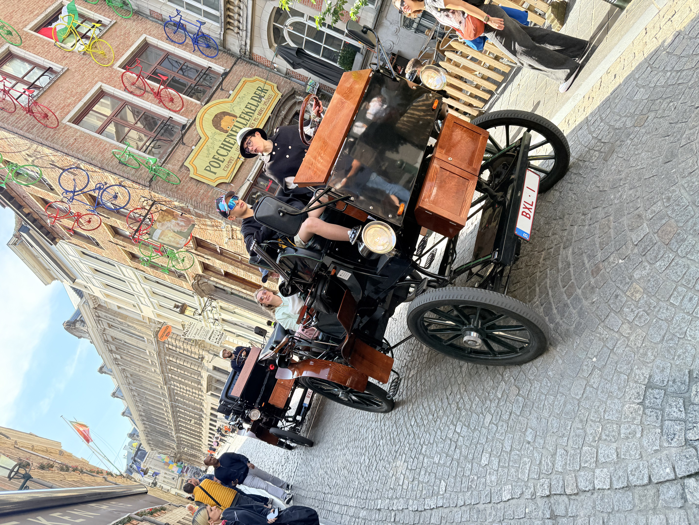

Snapshots from My Journey
A small collection of photographs I took during my summer trip. Each image captures a moment, a place, or a feeling from the journey between Paris and Brussels.
Featured Photographs



Back to the Story
Want to read more about the trip? Head back to the home page.